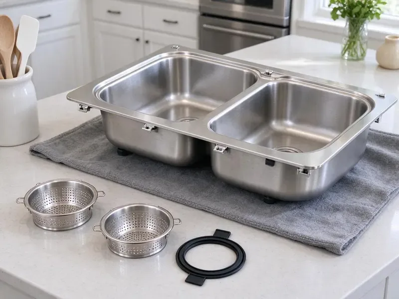

Grease Trap Installation in Bluffton, SC
Grease trap installation in Bluffton, SC, sized from your fixture list and set where your staff can clean it.
- Overnight Installs Available
- Local South Carolina Plumbers
- Full-Sink Drain Test
- Sized to PDI and ASME

Outgrown Your Grease Trap in Bluffton, SC?
Bring your plans. We check sizing against the local FOG rules.
Under-Sink Traps and Outdoor Interceptors in Bluffton, SC
Grease traps fail inspections for boring reasons. The flow control is missing or the unit is one size too small for the kitchen it serves. Both of those are avoidable. We install grease traps in Bluffton with those checks done before the inspector shows up, which is the easiest way to open on schedule and stay open.
Work we handle every week:
- Permit filing and inspection scheduling
- Units certified to PDI G-101 or ASME
- Sampling ports where the FOG program asks

Additional Kitchen Plumbing Services in Bluffton, SC
Our kitchen plumbing services in Bluffton, SC cover sinks, disposals, dishwashers, and grease traps so your kitchen stays clean, safe, and fully functional.


Customers
Why Choose KBN Plumbing for Grease Trap Installation in Bluffton, SC?
Sewer authorities trace grease blockages back to the building that caused them. Once they find yours, you can be billed for the cleanup and put on a stricter inspection schedule. That costs more than a trap. We build to the local FOG rules from day one and give you the documents to prove it.
- Licensed Plumbers, Licensed commercial plumbers do the work, not laborers with a van.
- Tested Before We Leave, A full sink is drained through the trap to prove it keeps up with your worst case.
- Certified Units, We install traps certified to PDI G-101 or the matching ASME standard.
Citywide Coverage
Strip centers and mixed-use buildings each bring their own landlord rules about when we can cut floors or close a parking area. Before the permit goes in, we clear the schedule with the property manager. That avoids a stop-work call. Night work is common.
Experienced Team
Every tech on our grease trap crew carries a laser level and a sewer camera, because a trap set out of level or tied into a broken line will fail early. We check both before we close anything up. Mistakes get caught on site. A second set of eyes checks every sizing calculation.
Safety-First Approach
Open trenches and lifted lids get barricaded before we walk away, even for a lunch break. Customers and delivery drivers do not watch their feet. We use cones and steel plates over any trench in a drive lane, and lids get bolted back down at the end of each day. Nothing stays open overnight.
Trusted Certified Bluffton Plumbing Services Professionals
At KBN Plumbing, we take pride in licensed, certified plumbing services throughout Bluffton, SC. Those papers on the wall mean something. Every repair, install and maintenance visit follows strict safety and quality rules, and the plumbers doing the work carry recognized industry credentials.
Call Us Now PHCC Plumbing Contractor Recognition
PHCC Plumbing Contractor Recognition Better Business Bureau (BBB) Accreditation
Better Business Bureau (BBB) Accreditation Angi Certified Pro
Angi Certified Pro ISO 9001 Quality Management Certification
ISO 9001 Quality Management CertificationGrease Traps and Interceptors Set in Bluffton, SC
Zurn Grease Trap Installation in Bluffton
Zurn's indoor grease interceptors cover the common sizes from small under-sink units up to 100 GPM, and we set enough of them to know where the gaskets give trouble. After a few years of hot water and scraping, the lid gasket is what usually leaks. We keep spares on the truck. Most Zurn units come with a flow control fitting, and we mount it on the inlet side at the height the instructions call for.

Residential Grease Interceptor Setup in Bluffton, SC
Homes rarely need a grease trap, though some do. We see them in licensed home kitchens and in houses where the sewer lateral keeps clogging with grease. A small 4 to 7 GPM unit under the kitchen sink catches most of it, and cleaning takes about ten minutes with a spatula and a bucket. Check with your local health office first.
Hydro-Mechanical Grease Interceptor Installation in Bluffton
Inside a hydromechanical interceptor, baffles do the separating while a flow control fitting with an air intake holds incoming water to the rated flow. The air intake has to be vented to code, not left open in the kitchen. Get that wrong and the trap siphons. A trap that sits out of level loses capacity, so we shim it flat before connecting anything.
Automatic Grease Removal Units in Bluffton
An automatic grease removal unit heats the trapped grease and skims it into a container on a timer, so staff empty a bucket instead of scraping a tank. The purchase price is higher than a passive trap. Plan for a dedicated circuit near the unit, which your electrician will need to run. Fry-heavy kitchens like them most.
Restaurant Grease Trap Compliance in Bluffton, SC
Most sewer authorities run a FOG program with an inspector who opens your trap and checks your pump-out manifests against the schedule they set. Fail that and you can face fines or a surcharge on your sewer bill. We install to pass. That means a sample port where the program wants one and a unit sized to the number their formula gives, not the number the last contractor guessed.
Emergency Grease Trap Services in Bluffton, SC
A grease trap backing up into the floor sinks at the start of Friday dinner service means a closed kitchen and a health inspector who may not let you reopen until it is fixed. First job is figuring out whether the clog is in the trap or the pipe on either side of it. Often it is the outlet. A failed trap can often get a stopgap unit that night and a proper replacement later in the week.
Commercial Kitchen Grease Trap Installs in Bluffton
Every commercial install starts with a fixture list. We count each sink, floor drain and dish machine that will tie in, then add the gallons per minute each one can dump. From there we pick a hydromechanical unit or a gravity tank and figure out where it can sit with a straight shot to the building sewer. Fewer bends, fewer clogs.

In-Ground Gravity Interceptor Installation in Bluffton, SC
Buffets, grocery delis and kitchens doing several hundred covers a night usually end up with an in-ground gravity interceptor of 1,000 gallons or more. The work is excavation and a level gravel bed, then the tank and its inlet and outlet piping. Most South Carolina homes sit on crawlspaces or slabs rather than basements, which puts supply and drain lines either under the floor or under concrete. What comes out of the hole decides our shoring and backfill. Risers bring the lids to grade.
Grease Trap Installation Near Bluffton, SC
Local crews know the local inspectors. Small paperwork habits, like where the sizing math goes, can cost a week if you get them wrong. A return trip for an inspection correction is short for us.
Having a plumber near Bluffton who already knows your trap makes the next call faster. Our dispatch line is (864) 588-3813. Each install goes in our records with the model and the date. Next time you need service, we already know what you have.
KBN Plumbing at a Glance
- Fully licensed plumbing team covering Bluffton, SC
- Same-day appointments and 24/7 emergency response
- Upfront, flat-rate pricing before work begins
- 4.8-star rated by 596+ South Carolina customers
Bluffton Map
Bluffton Information
- Population
- 35,243
- Area codes
- Local
- Service area
- Bluffton and communities within 40 miles
- Nearby
- Hilton Head Island, Summerville, North Charleston, Charleston
Local pretreatment rules decide the size and type of interceptor a Bluffton, SC food business needs. Most South Carolina homes sit on crawlspaces or slabs rather than basements, which puts supply and drain lines either under the floor or under concrete.
Talk to a Plumber
Call KBN Plumbing for reliable plumbing work done by licensed pros in Bluffton, SC.
Our Specialized Plumbing Services in Bluffton, SC
At KBN Plumbing, we handle the full list of plumbing services across Bluffton, SC. From leak detection to full system installs, our team works fast and charges fair prices on homes and commercial properties alike. Take a look at our core services below:


How a Grease Trap Installation Works in Bluffton, SC
Most of a grease trap job is planning. The install itself is often a single day in Bluffton.
Call and Fixture List
Call KBN Plumbing at (864) 588-3813 and tell us what drains to the trap. We set a site visit and give you a written estimate after it.
Size and Permit
Our tech runs the flow math on each fixture, pick the unit and file the permit in Bluffton with the sizing attached.
Install and Test
We set the trap, pipe the flow control and vent, and drain a full sink through it before the inspector signs off.
Frequently Asked Questions About Grease Trap Installation in Bluffton
Installed prices for small indoor hydromechanical traps typically fall between $1,500 and $5,000. Large outdoor gravity interceptors often run $8,000 to $30,000 or more once excavation and site restoration are counted. Brand is a small part of it. We give you a written estimate after we walk the site, and it does not change unless we hit something underground nobody could see.
For indoor traps we lean on Zurn, Watts, Schier and Endura, because their parts are easy to find and their units carry PDI or ASME certification. We like the plastic bodies from Schier where steel would rust out. Brand matters less than sizing. We pick the rating first, then the brand that fits the space and budget.
Indoor hydromechanical traps and outdoor gravity interceptors cover nearly every job we do. Automatic grease removal units are a pricier option for kitchens that fry all day. Most cafes go hydromechanical. Big-volume kitchens and anything the local FOG program flags as high risk usually end up with a gravity interceptor outside the building.
It keeps cooking grease out of the public sewer. Inside the trap, warm wastewater slows and cools, so grease rises and stays put while water flows on. Without one, that grease hardens in the city mains and causes sewer overflows, and sewer authorities fine the kitchens they trace it to. Your own drain lines benefit too.
Pump-outs every couple of weeks on a trap that used to go two months is the clearest sign you have outgrown it or the baffles have failed. Grease odor in the dining room is another. Rust shows up too. On steel traps we look for pinholes at the seams, and on any trap we check whether the outlet line downstream is coated with grease that should have been caught.
Coverage comes from two places. Your trap carries a factory warranty that varies by brand and material. Our written labor warranty covers the joints we made and how we set the unit. Damage from skipped cleanings falls outside it.
In everyday talk the two names get swapped. The trade usually calls the small indoor unit a trap and the big outdoor tank an interceptor. Codes vary on the wording. Many codes say hydromechanical interceptor and gravity interceptor instead, and we match the local wording on the permit.
Half a day for most indoor units. We set it, connect it, add the flow control and test it with water. Outdoor tanks need two to five days, with an inspection before backfill. Permits add lead time.
Hear From Customers Who Hired Our Plumbing Experts

Lisa C.
Water was pouring out from under the washing machine on a holiday weekend. KBN Plumbing talked me through closing the valves over the phone and had a plumber at the house within ninety minutes. It was a burst fill hose.
Emergency Plumbing · Goose Creek, SC
Brian W.
I smelled gas behind the dryer and called right away. The plumber found a corroded flex connector, replaced it, and pressure tested the whole line before turning the gas back on. He let me watch the gauge hold steady for fifteen minutes.
Gas Line Repair · Bluffton, SCGreg S.
I manage a small strip center with six tenants. KBN Plumbing handles our annual backflow testing and fixed a recurring clog in the shared sewer line that had been backing into the nail salon. Their reports come in clean and on time.
Commercial Plumbing · Hilton Head Island, SCEmily R.
The shutoff valve under our kitchen sink snapped off in my hand on a Sunday morning. KBN Plumbing had someone out by early afternoon. He replaced both angle stops with quarter turn valves and showed me where our main shutoff was, which I honestly did not know.
Plumbing Repair · Mount Pleasant, SC
Nathan E.
Our tankless heater kept throwing an error code and shutting off mid shower. The tech flushed the heat exchanger, which was full of scale, and replaced a bad flow sensor. Hot water has been steady for half a year now.
Water Heater Repair · Hilton Head Island, SC
Patricia H.
We had a slab leak that two other companies could not find. KBN Plumbing located it in under an hour with a listening device. They rerouted the line through the attic instead of breaking up the floor, so we kept our kitchen tile.
Slab Leak Repair · Charleston, SC